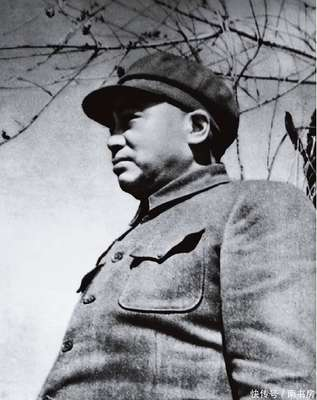

彭德怀（1898年10月24日－1974年11月29日），名清宗，后改德怀，字得华，号石穿，小名钟伢子、石穿，湖南湘潭人，湖南陆军军官讲武堂毕业，中华人民共和国开国元勋，中国人民解放军著名将领、中华人民共和国元帅。抗日战争中发动百团大战，为中国共产党领导下的八路军在正面战场取得的最重大胜利。朝鲜战争中，作为中国人民志愿军司令员，与麦克阿瑟和李奇微对决，迫使联合国军撤退至北纬38度线以南。中华人民共和国成立后，任国务院副总理兼第一任国防部部长，中共第六至八届中央政治局委员，中共中央军事委员会副主席。1953年7月31日，彭德怀被授予“朝鲜英雄”称号。
历史贡献
1931年11月，彭德怀任中央革命军事委员会副主席。他参与指挥了第一、第二、第三次反“围剿”，在中央苏区历次反“围剿”中，他是前线主要指挥员之一，所率3军团屡建战功，在保卫中央革命根据地的战斗中屡建功勋。在第五次反“围剿”中，逐渐认识到“左”倾冒险主义的危害，曾对错误的军事指挥提出严肃的批评。
1935年1月，彭德怀参加遵义会议，拥护毛泽东的正确主张。红一、红四方面军会合后，同张国焘的反党分裂活动进行了坚决斗争。11月任西北革命军事委员会副主席、红军第一方面军司令员，参与指挥了直罗镇战役。
1940年秋，彭德怀在华北组织发动百团大战，使日本侵略军受到沉重打击。1943年9月回延安，协助毛泽东、朱德指挥华北敌后抗战。
1954年后，彭德怀任国务院副总理兼国防部长、国防委员会副主席，他以极大的魄力，领导实行军队组织机构和重大制度的改革，改善武器装备，组建技术兵种，举办各类军事学校和研究机构，实施正规的军政训练，建立第一线国防筑城体系，促进人民解放军在保持优良传统的基础上，实现从单一兵种到诸军兵种合成军队的历史性转变。对中国人民解放军的现代化、正规化建设，作出了卓越的贡献。
与死神擦肩而过
在十大元帅中，彭德怀是惟一一个参加过两次国内革命战争、抗日战争，在解放后又和美国人打过仗的，与死神擦肩更是千回百次。井冈山失守，“石子要过刀，茅草要过火”，未死；长征始发，彭殿后，血染湘江，八万红军，死伤五万，未死；抗日，鬼子扫荡，围八路军总部，副参谋长左权牺牲，彭奋力突围，未死；转战陕北，彭身为一线指挥，以两万兵敌胡宗南28万，几临险境，未死；朝鲜战争，敌机空袭，大火吞噬志愿军指挥部，参谋毛岸英等遇难，彭未死。
从朝鲜战场回来后，如果彭德怀到此打住，当他的元帅，当他的国防部长，可以善终，可以保官、保名、保一个安逸的日子。战争过去，天下太平，将军挂甲，享受尊荣，这是多么正常的事情。林彪不是就不接赴朝之命，养尊处优多年吗？但彭德怀不是这样的人。他是军人，更是人民的儿子。打仗只是他为国、为民尽忠的一部分。战争结束，忠心未了，人民又有疾苦，他还是要管，要争。